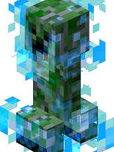
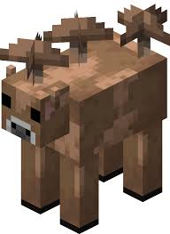
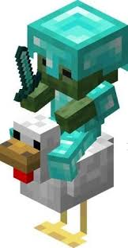
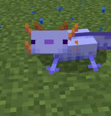
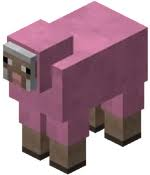

Accueil
Menu survie
Les créatures rares dans Minecraft,Top 5
L’apparition des différentes créatures est régie par un taux d’apparition. Par conséquent, certaines créatures sont beaucoup plus rares que d’autres.
Par exemple, certains animaux hostiles ou passifs ne peuvent apparaître que dans des biomes très particuliers, ou sous des conditions uniques comme un éclair,
une lune spécifique ou une structure générée aléatoirement. Cela fait que rencontrer ces créatures devient un véritable exploit pour les joueurs !
Voici le Top 5 des créatures les plus rares de minecraft :
Top 5 : Creeper chargé (Charged Creeper)
Le Creeper chargé est un Creeper classique qui a été frappé par la foudre. Cette transformation est extrêmement rare,
avec une probabilité qui dépend des orages et de la position du mob, ce qui rend sa rencontre exceptionnelle.
Il explose avec une force bien plus grande qu’un Creeper normal, et peut même faire apparaître des têtes de mobs lorsqu’il tue une créature.
C’est le monstre rare le plus redouté et spectaculaire du jeu.

Top 4 : Vache mushroom marron
La vache mushroom marron (vache champignon) est rare dufait que la mushroom normale est déja rare car elle n'apparait
que sur les îles champignons,un biome très rare.La vache mushroom marron est une mushroom normale qui s'est fait frapper par la foudre.
Les probablités pour trouver une île champignon avec une mushroom qui se fait frapper par la foudre est donc extrêment rare.

Top 3 : Chicken Jockey full diam's
Le Chicken Jockey est déjà un mob rare : un bébé zombie a environ 5 % de chances d’apparaître comme jockey sur un poulet.
Si on ajoute le fait qu’il porte de l’équipement en diamant, la probabilité devient extrêmement faible, presque astronomique.
Ce combo fait de lui un adversaire unique et impressionnant à croiser dans le jeu.

Top 2 : Axolotl bleu
L’axolotl bleu est la variante la plus rare des axolotls, avec une probabilité d’apparition de 0,083 % parmi tous les axolotls.
Trouver un axolotl bleu est donc un vrai coup de chance.

Top 1 : Mouton rose
Le mouton rose est la créature passive la plus rare du jeu.
Il n’a qu’une chance d’apparition de 0,164 % à la naissance, ce qui signifie qu’on peut parcourir des kilomètres sans en voir un seul.
